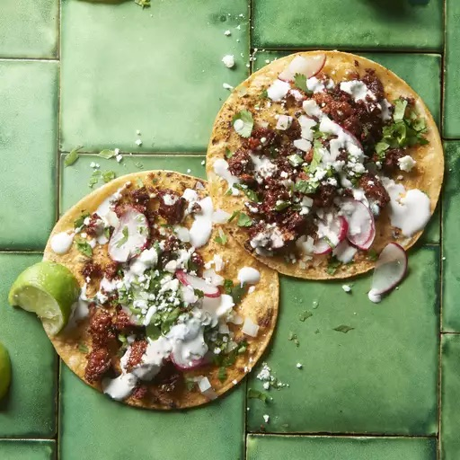

Chorizo Street Tacos

Description
These chorizo tacos use just five ingredients and taste amazing!
Ingredients
- One chorizo sausage link, casing removed and meat crumbled
- Two tablespoons of chipotle peppers in adobo sauce
- Four corn tortillas
- Two tablespoons chopped onion, or to taste
- Two tablespoons chopped fresh cilantro, or to taste (Optional)
Directions
- Step 1: Combine crumbled chorizo and chipotle peppers in adobo sauce in a bowl.
- Step 2: Heat a skillet over medium-high heat; add chorizo mixture and cook until crisp,
5 to 7 minutes. Transfer to a plate, reserving grease in the skillet.
- Step 3: Heat tortillas in reserved grease in the skillet over medium heat until warmed,
1 to 2 minutes per side. Stack 2 tortillas for each taco, then fill with chorizo, onion, and cilantro.